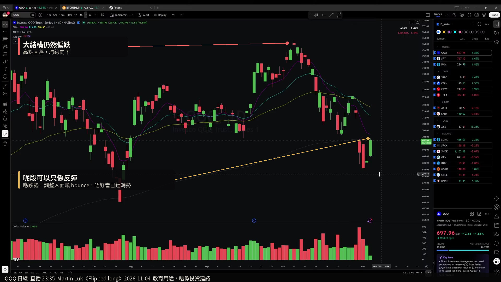

概要
呢段可以只係跌勢入面嘅反彈
22:43 佢話今日交易就講到呢度；22:53 話而家只係管理倉位。之後喺 23:31 至 24:19，用 QQQ 日線做市況判斷：仍然係 choppy market，呢段可以只係另一段跌勢／調整入面嘅 bounce。所以唔會喺 long 邊做得太進取，仲留住一啲淡倉；又話或者而家可以同時做 long 同 short，睇下點。
由 09:13 到 22:43 大約 13 分鐘幾乎冇對白，畫面主要係翻睇唔同股票。呢段只當作管理同覆盤，唔另外做成圖冊。23:35 嘅 QQQ 日線，就係佢講「bounce within the downtrend」嗰陣嘅主圖。
圖一 · 主圖
QQQ 日線：bounce 可以仍在跌勢入面
直播 23:35

原話
I think um that's all that's it for my trading today. Now it's just going to manage my positions I
我諗今日嘅交易就講到呢度。而家只係管理倉位。
原話
I would assume this is a this is still a choppy market and this is this could be the only the bounce of a of another downtrend of another um I mean a bounce within the within the downtrend within the correction. So I I won't like go super crazy on the long side and that's why I'm keeping some of the shorts. Maybe maybe it this is the time to go both long and short at the same time and see how how it goes um
我當呢個仍然係一個 choppy 嘅市場。呢段可以只係另一段跌勢、另一段調整入面嘅反彈。所以我唔會喺 long 邊做得太進取，亦都因為咁先留住一啲淡倉。或者而家可以同時做 long 同 short，睇下點。
點樣讀
23:31 開始講呢段市況嗰陣，畫面主要停喺 QQQ 日線。高點已經回落，均線向下，右面有一組彈起，但仍然喺下跌結構入面。呢幅圖就係「bounce within the downtrend within the correction」最直接嘅位置。
跟住呢個判斷嘅管理態度係：唔好喺 long 邊做得太進取，仲留住一啲淡倉；甚至兩邊一齊做，再睇後續。呢啲係倉位管理原則，畫面仍然睇唔到具體倉位或者損益，所以唔寫死數字。
附註
注意事項
- 講緊呢段期間，畫面亦短暫切過 SPY 同其他股票，但市況判斷嘅主圖係 QQQ 日線。
- 23:44 佢曾經把 QQQ 日線再拉遠睇更長歷史；本頁用 23:35 呢幅較清楚見到近期跌勢同反彈嘅圖做主圖。
- 講完呢段之後，大約 26:15 開始轉去 XAUUSD，就係下一科「平掉金銀淡倉」。
免責聲明：呢份係教育拆解，唔係投資建議，亦唔好當作買賣指示。